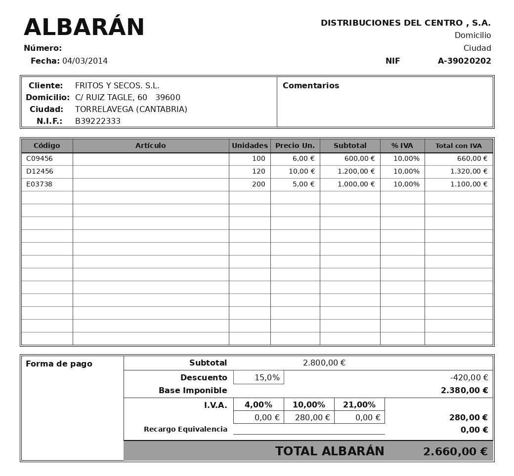
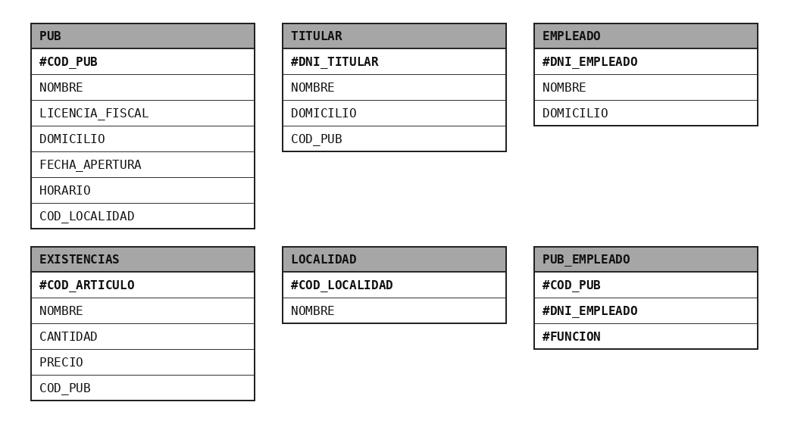

TODOS los ejercicios se resolverán y corregirán en clase, pero únicamente se entregarán a través de la plataforma aquellos que se indiquen expresamente.
1. Creación y modificación de bases de datos en MySQL (DDL)
NOTA: Las cadenas de texto serán de longitud 30 (VARCHAR(30)), excepto cuando sepamos o se indique expresamente la longitud.
Ejercicio 1. Crea una base de datos llamada biblioteca con las siguientes tablas:
Ejercicio 2. A la tabla libros del ejercicio anterior, añade las columnas:
editorial (VARCHAR(100)).
precio (DECIMAL(10,2)).
Ejercicio 3. Elimina la columna año_publicacion y renombra la tabla a libros_disponibles.
Ejercicio 4. Crea una base de datos tienda_online con estas tablas:
Clientes:
id_cliente (INT, PK, AUTO_INCREMENT)
dni (UNIQUE, NOT NULL)
nombre (NOT NULL)
fecha_nacimiento (tiene que ser mayor de edad)
Productos:
id_producto (INT, PK, AUTO_INCREMENT)
nombre (NOT NULL)
categoria: puede tomar los valores 'electrónica', 'ropa', 'alimentación'
precioDECIMAL(10,2) (tiene que ser mayor de 0)
stockINT DEFAULT 0
Pedidos:
id_pedido (INT, PK, AUTO_INCREMENT)
id_cliente (FK a clientes)
fecha_pedido (incluye la hora)
estado: puede tomar los valores 'pendiente', 'enviado', 'entregado'
Ejercicio 5. Crea un sistema para una universidad con:
Tabla carreras (id, nombre, duracion_años)
Tabla estudiantes (id, nombre, id_carrera, fecha_ingreso)
Tabla cursos (id, nombre, creditos, id_carrera)
Tabla matriculas (id_estudiante, id_curso, año, semestre, nota)
Implementa:
Identifica las claves y FK. Clave primaria compuesta en matriculas.
ON DELETE CASCADE para estudiantes–carreras.
ON UPDATE RESTRICT para cursos–carreras.
CHECK (nota BETWEEN 0 AND 10).
Ejercicio 6. Diseña e implementa una base de datos para un sistema de reservas de hotel que incluya:
Tabla hoteles con información del hotel (identificador, nombre, dirección, estrellas).
Tabla habitaciones con: id, tipo de habitación (individual, doble, suite) y precios por noche.
Tabla clientes con: id, nombre, apellidos, nif y preferencias (texto corto).
Tabla reservas que registre: cliente, habitación, fecha entrada, fecha de salida, estado de la reserva (si está pagada o no).
Tabla servicios adicionales con: id, tipo servicio (spa, restaurante, gimnasio, piscina), precio.
Restricciones a implementar:
Una habitación no puede ser reservada dos veces en las mismas fechas.
Los precios deben ser positivos.
Las fechas de salida deben ser posteriores a las de entrada.
El campo email debe ser único por cliente.
Ejercicio 7. Añadir un campo llamado descripción para una información detallada del hotel (TEXT).
Ejercicio 8. Añadir campos para guardar horarios oficiales de check-in y check-out en el hotel.
Ejercicio 9. Modificar el campo teléfono para incluir código de país (+34).
Ejercicio 10. Renombrar el campo email a email_contacto.
Ejercicio 11. En la tabla habitaciones añadir un campo en_mantenimiento para indicar si está en mantenimiento o no. El valor por defecto será FALSE.
Ejercicio 12. Añadir un campo para saber el número de planta, tener en cuenta que son valores muy pequeños.
Ejercicio 13. Añadir un campo llamado motivo_mantenimiento para indicar si es por pintura, reparación, limpieza u otro motivo.
2. Análisis de documentos e implementación de esquemas
Ejercicio 1. Analizar el siguiente albarán. El albarán o nota de entrega es un documento mercantil que acredita la entrega de un pedido. Al comprador le sirve para comprobar que lo que ha recibido coincide con lo que solicitó y verificarlo con la facturación del pedido cuando ésta sea posterior. Realizar todo el proceso de análisis, diseño y construcción de una base de datos para que pueda recoger toda la información necesaria para almacenar los albaranes de una empresa.

Nota: La forma de pago puede ser en metálico o transferencia. Recargo Equivalencia es un tipo especial de impuesto que en algunos casos es necesario realizar.
Ejercicio 2. Disponemos de la siguiente Base de Datos para gestionar la información de los pubs de una determinada provincia:

Se pide escribir los comandos SQL que permitan la creación de las tablas anteriores teniendo en cuenta las siguientes restricciones:
No definir las FOREIGN KEY en la creación de las tablas.
Todos los valores son de tipo carácter excepto los campos FECHA_APERTURA (fecha), CANTIDAD, PRECIO y COD_LOCALIDAD (numéricos).
Los únicos campos que no son obligatorios son los campos DOMICILIO.
Los valores del campo horario sólo pueden ser HOR1, HOR2 y HOR3.
No es posible dar de alta EXISTENCIAS a precio 0.
El campo función de la tabla PUB_EMPLEADO sólo puede tener los valores CAMARERO, SEGURIDAD, LIMPIEZA.
Las claves primarias vienen marcadas con el símbolo #.
Ejercicio 3. Se ha de mantener la integridad referencial entre las tablas. Modifica las tablas para añadir las FOREIGN KEY. Ejemplo:
Ejercicio 4. El campo Licencia_fiscal de la tabla pub es un campo con valores únicos. Crea la sentencia correspondiente para modificar la tabla.
Ejercicio 5. Cambia la longitud del campo nombre de la tabla existencias.
3. Diseño completo: Diagrama E-R, paso a tablas y creación en MySQL
ACTIVIDAD 1. Informatización de una consultora
Diseñar una base de datos para informatizar una consultora, sabiendo que:
a) De cada empleado se desea almacenar su NIF, nombre y apellidos, fecha de nacimiento y titulación.
b) Cada empleado pertenecerá a un solo departamento de la empresa. De cada departamento debemos registrar su código y nombre.
c) Cada departamento tendrá, al menos, 3 empleados.
d) Cada empleado trabajará en diferentes proyectos, de los que se almacenan su código y descripción.
e) Cada vez que un empleado trabaje en un proyecto, es necesario almacenar la fecha de incorporación al mismo, así como si hace funciones de coordinación del mismo.
Realiza:
Diagrama E-R (entrega en formato digital).
Paso a tabla.
Creación en MySQL de las tablas. Deben declararse los campos con el tipo de datos más adecuado, las claves principales, claves foráneas y las restricciones más adecuadas sobre las columnas de la tabla.
No se subirá ningún archivo; se entregará en el foro copiando y pegando la imagen, el paso a tablas y el script SQL.
ACTIVIDAD 2. Gestión de empresa (administrativos y técnicos)
Dentro de nuestra empresa tenemos dos tipos de empleados: administrativos y técnicos. De todos los empleados tenemos un identificador, su nombre y apellidos, fecha de nacimiento, sueldo y su dirección de correo electrónico (si la tiene). De los técnicos necesitamos saber su nivel de estudios (ESO, Bachillerato, CFGM, CFGS, Universitarios). De los administrativos necesitamos saber su fecha de incorporación.
Los empleados pertenecen a un solo departamento. De los departamentos sabemos su código, formado por tres letras, y el nombre. Tenemos que saber la fecha de incorporación del empleado al departamento.
Los técnicos pueden trabajar en distintos proyectos con una fecha de asignación y fecha de cese. De los proyectos sabemos el identificador, nombre, fecha de inicio y fin del proyecto.
Realiza:
Diagrama E-R (entrega en formato digital en alguna aplicación en PDF).
Paso a tabla (entrega en PDF). Justificar por qué cumple hasta la tercera forma normal.
Creación en MySQL de las tablas (entrega del script de sentencias SQL). Deben declararse los campos con el tipo de datos más adecuado, las claves principales, claves foráneas y las restricciones más adecuadas sobre las columnas de la tabla.
4. Cuestiones teóricas y práctica con MySQL
4.1 Teoría
Defina brevemente el significado de las siglas SQL.
El lenguaje SQL se divide en tres partes DDL, DML y DCL. Defina brevemente en qué consiste cada una de las partes.
Defina brevemente qué es MySQL Server.
Defina brevemente qué es MySQL WorkBench.
Defina brevemente qué es phpMyAdmin.
Defina brevemente el significado de LAMP Stack.
Define para qué sirven las siguientes palabras reservadas de la creación de tablas en MySQL:
AUTO_INCREMENT
CHARACTER SET
COLLATE
ENGINE
¿Qué diferencias existen entre los motores de almacenamiento InnoDB y MyISAM de MySQL? ¿Cuál de los dos es el que se usa por defecto?
¿Qué diferencia existe entre los set de caracteres utf8 y utf8mb4 en MySQL?
¿Qué diferencia hay entre los tipos de datos VARCHAR y CHAR?
¿Qué diferencia hay entre los tipos de datos TEXT y BLOB?
¿Qué diferencia hay entre los tipos de datos DATETIME y TIMESTAMP?
¿Qué diferencia hay entre ENUM y SET?
¿Qué tipo de dato usarías si necesitas almacenar un número real exacto sin redondeo?
Explica brevemente para qué sirven las cláusulas ON DELETE y ON UPDATE.
Explica brevemente para qué sirven las siguientes opciones que podemos usar junto a las cláusulas ON DELETE y ON UPDATE:
RESTRICT
CASCADE
SET NULL
NO ACTION
¿Qué diferencia existe entre TRUNCATE y DELETE?
¿Para qué se utiliza el atributo UNIQUE?
¿Qué diferencia hay entre INDEX y KEY? ¿Para qué se utilizan?
¿Para qué se utiliza el atributo ZEROFILL?
¿Qué diferencia existe entre declarar una columna como INT(11) y INT(11) ZEROFILL?
¿Qué significan las llaves y los corchetes en la siguiente descripción de notación?
CREATE {DATABASE | SCHEMA} [IF NOT EXISTS] nombre_base_datos;
¿Qué comando tendría que escribir desde un terminal para conectarnos con el usuario root con contraseña 1234, a un MySQL Server remoto que se está ejecutando en una máquina con la IP 10.10.1.5?
¿Qué puerto es el que utiliza por defecto el servicio de MySQL Server?
Cuando instalamos MySQL Server está configurado por defecto para que sólo acepte conexiones locales y que no permita conexiones remotas. ¿Qué valor tendríamos que poner en la directiva de configuración bind-address para permitir conexiones remotas?
[mysqld]
bind-address = 127.0.0.1
Los usuarios de MySQL Server se almacenan en la tabla mysql.user. La clave primaria de esta tabla está formada por los valores user y host, de modo que cada fila vendrá identificada por un nombre de usuario y el host desde el que puede conectarse. Según la siguiente tabla, ¿desde qué máquinas se podrá conectar el usuario root@'%'?
user
host
root
%
root
localhost
debian-sys-maint
localhost
mysql.session
localhost
mysql.sys
localhost
4.2 Práctica con MySQL: Base de datos ventas
Ejecute el siguiente script para crear una base de datos llamada ventas:
DROP DATABASE IF EXISTS ventas;
CREATE DATABASE ventas CHARACTER SET latin1;
USE ventas;
CREATE TABLE cliente (
id INT UNSIGNED AUTO_INCREMENT PRIMARY KEY,
nombre VARCHAR(25),
primer_apellido VARCHAR(15) NOT NULL,
ciudad VARCHAR(100),
categoria INT UNSIGNED
);
CREATE TABLE comercial (
id INT UNSIGNED AUTO_INCREMENT PRIMARY KEY,
nombre VARCHAR(100) NOT NULL,
apellido1 VARCHAR(100) NOT NULL,
apellido2 VARCHAR(100),
ciudad VARCHAR(100),
comision FLOAT
);
Una vez que ha ejecutado el script y ha creado la base de datos en MySQL Server, ¿qué sentencia SQL debería ejecutar para modificar el encoding de la base de datos y utilizar utf8mb4 en lugar de latin1?
Modifique la columna nombre de la tabla cliente para que pueda almacenar cadenas de hasta 100 caracteres y para que no pueda ser NULL.
¿Qué comando puede ejecutar para comprobar que el cambio que se ha realizado en el paso anterior se ha ejecutado correctamente?
Modifique el nombre de la columna primer_apellido y asígnele apellido1. También tendrá que permitir que pueda almacenar hasta 100 caracteres y que no pueda ser un valor NULL.
Añada una nueva columna a la tabla cliente para poder almacenar el segundo apellido. La columna se debe llamar apellido2, debe estar entre la columna apellido1 y ciudad, puede almacenar hasta 100 caracteres y puede ser NULL.
Elimine la columna categoria de la tabla cliente.
Modifique la columna comision de la tabla comercial para que almacene por defecto el valor 10.
Nota: Todos los ejercicios se resolverán y corregirán en clase, pero únicamente se entregarán a través de la plataforma aquellos que se indiquen expresamente. Recuerda probar todos tus scripts DDL en MySQL, verificar que no producen errores de sintaxis ni de integridad referencial y documentar cualquier restricción de negocio adicional.